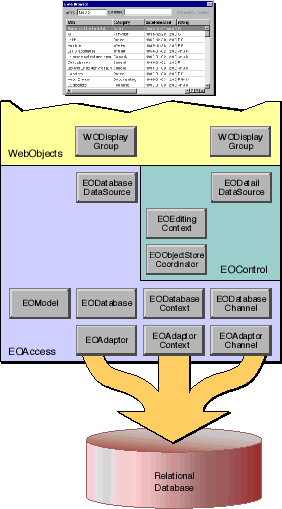

Table of Contents
Table of Contents  Next Section
Table of Contents
Next Section
Table of Contents  Previous Section
Previous Section
The WebObjects box is jagged at the top because not all of the WebObjects classes that participate in user interface management are illustrated. For example, the WebObjects framework provides user interface elements such as WOTextField and WOBrowser for generating web pages that users see in their browsers. None of these classes are shown. Rather, Figure 17 shows only the WebObjects framework class that acts as the go-between for Enterprise Objects Framework's control layer and WebObjects user interface: WODisplayGroup.
WODisplayGroup is analogous to the interface layer's EODisplayGroup. They have virtually the same APIs, but EODisplayGroup works with the interface layer's EOAssociation's and WODisplayGroup works with WebObjects framework elements.

Figure 17. Classes in an HTML WebObjects Application
Table of Contents Next Section